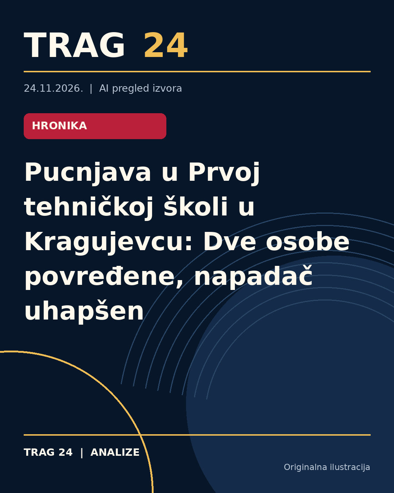

Pucnjava u Prvoj tehničkoj školi u Kragujevcu: Dve osobe povređene, napadač uhapšen

ŠTA SE DOGODILO
Ujutru 24. novembra oko 8 časova u Prvoj tehničkoj školi u Kragujevcu došlo je do pucnjave koju je izazvao sedamnaestogodišnji učenik te škole. On je u holu škole upotrebio malokalibarsku pušku, čime su dve žene povređene. Jedna je pogođena najverovatnije vatrenim oružjem, dok je druga zadobila povrede prilikom pucanja stakla. Napadač je ubrzo savladan i uhapšen.
HRONOLOGIJA
Incident se dogodio tokom prvog časa, što je sprečilo veći broj povređenih učenika budući da u to vreme u holu škole nije bilo prisutno đaka. Policijska patrola koja je bila u blizini odmah je reagovala i privela učenika. Nakon pucnjave, Ministarstvo prosvete je formiralo krizni štab i poslalo tim u Kragujevac. Ministar prosvete Dejan Vuk Stanković i gradonačelnik Kragujevca Nikola Dašić su se tokom dana pojavili u školi na licu mesta.
ŠTA NAVODE IZVORI
Prema policijskom saopštenju i zvaničnim izjavama, učenik je pucao malokalibarskom puškom, a pucnjava je izazvala dve povrede – jedna žena je ranjena u nogu, dok je druga zadobila rane od rikošeta ili stakla. Direktor škole je potvrdio da pomoćna radnica koja je ranjena nije životno ugrožena. Nezvanično se navodi da se metak u pušci zaglavio, što je sprečilo veću tragediju. Takođe postoji informacija o spisku koji je napadač imao kod sebe, ali to nije potvrđeno zvanično.
ŠTA JE POTVRĐENO
Potvrđeno je da su dve starije osobe povređene, da su učenici i ostalo osoblje škole bezbedni i da je napadač uhapšen odmah nakon događaja. Policija intenzivno radi na utvrđivanju svih okolnosti incidenta. Ministarstvo prosvete je odmah reagovalo formiranjem kriznog štaba i upućivanjem tima u školu.
ŠTA NIJE POTVRĐENO
Nije potvrđeno da li je učenik imao saučesnike ili dodatnu opremu. Informacije o postojećem spisku kod napadača i drugim mogućim motivima događaja su nezvanične i nisu potkrepljene zvaničnim izvorima. Takođe, načini na koje su povrede nastale, posebno u slučaju druge povređene osobe, nisu detaljno objašnjeni.
ŠTA OSTАJE OTVORENO: Istraga nadležnih organa treba da razjasni motive napada, da li je počinilac delovao samostalno, te tačne okolnosti pod kojima je pucnjava počela. Očekuje se dalji tok zvaničnih saopštenja i rezultati policijske istrage koji će pružiti dodatne informacije o ovom incidentu.
Izvori
- https://www.danas.rs/vesti/drustvo/pucnjava-u-skoli-kragujevac-prva-tehnicka/
- https://www.b92.net/info/hronika/287633/pucnjava-u-skoli-u-kragujevcu-ucenik-pucao-ima-povredjenih/vest
- https://vreme.com/vesti/mup-potvrdio-pucnjava-u-skoli-u-kragujevcu-ucenik-uhapsen/
Ova analiza je pripremljena uz pomoć veštačke inteligencije na osnovu javno dostupnih izvora. Navodi izvora nisu nužno nezavisno potvrđeni.